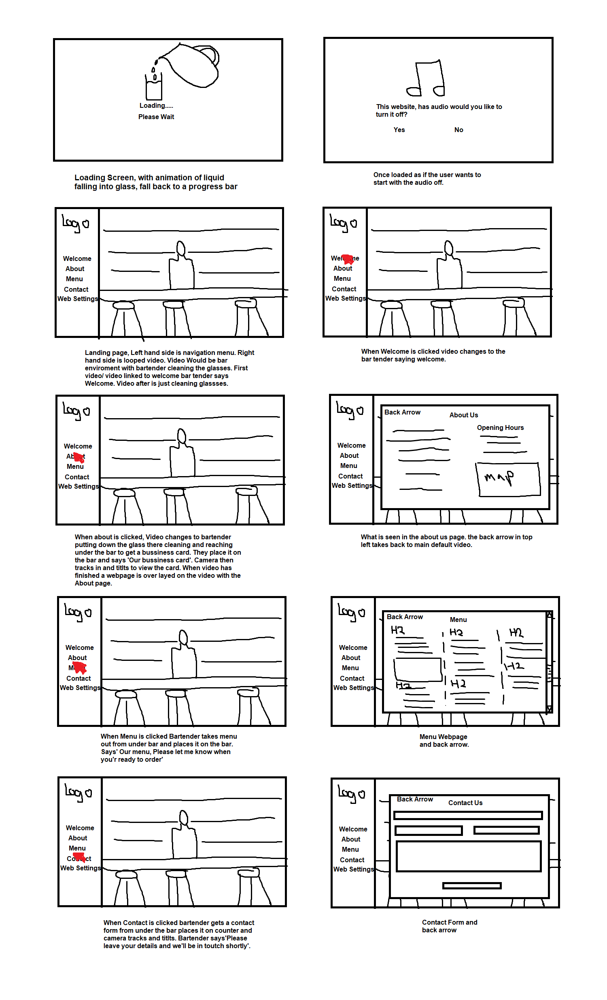

It's nice to meet you! Welcome to my portfolio. Here you'll find work from university any side and personal projects I'm currently working on. Some of these examples are a work in progress but where that's the case I'll try and show you what my end goal is and what my next steps will be.
As part of the first-year website development module I created three webpages based around a fictional cafe. The first webpage was to demonstrate the ability to create a complex form. I also included buttons for dark mode and a high contrast mode. If I were to go back and redo this I think I would have added more to the background and in general made it look a little less plain.
This second webpage was a more general business page. I included link functionality to make it quicker to get to the right section of the page. In addition, I included an Image gallery. I found making the image gallery to be a really great introduction to JavaScript it built on the skills developed in the tutorial work but I also enjoyed adding extra sections such as displaying captions when each photo is displayed.
For this finial webpage I used a flex layout which I was less familiar with, this was a good challenge but when I look back at it there is already a lot I would do differently. This webpage also runs horizontally using the flex direction CSS rule, changing the direction of the webpage was really refreshing and introduced me to the variety of layout options instead of the usual scroll from top to bottom.
If you want to see the full code for any of these pages you can find it here: Website code
Part of my role as secretary for the Computing Society has been maintaining the society website. This involves using html and CSS though our society dashboard. This was the first time I had written code for a website I had not created myself, which brought up some different problems. The main issue was with images, in the past I would size my images using the image CSS tag and try to keep them all the same size for consistency. However, on the society website styling the images in this way would affect images outside our editable area (highlighted in blue). The solution was simple I just needed to give class names to everything I wanted to edit and then target the class names instead of general CSS tags.
The society webpage is maintained through the union cloud dashboard service. The main way of editing the webpage is as a word inspired text editor, which does make it easy to quickly edit the website. However, I find it misses quite a few steps such as setting alt text for images and adding links to icons. This was ultimately why we decided to use code to make it more accessible and make a better impression on our members.
As our Society has grown, we have wanted to move away from using the default templates for emails, mainly to try and create a more professional and cohesive appearance. Whilst its nothing fancy it helps us make a good first impression on our new members as this an email is often the first communication, they will receive from us once they have joined.
Having this as a template helps speed up shorter emails and provide a good framework for our longer newsletters.
I really like the idea of a website that is more of an interactive media experience, this project is an excuse for me to explore that concept and learn some new skills.
The general idea layout would look like above. I have made the environment in Blender using 3D modelling. I am still a beginner in this and need to look at tutorials to work out how to do a lot of it, but it has been an interesting skill to explore over lockdown. I plan to add a bartender to this scene and have them cleaning a glass as a short video which can then loop. When the user clicks on a nav link I would like to change the video that is playing to one of the bartender placing a menu on the bar and the camera walking in and tilting to view this menu. I'd then use the Z axis in CSS to display the menu over the video, I expect this is going to require some JavaScript to get the webpage to wait until the video has finished and then display the menu.
Accessibility is going to be an issue here, so I'm trying to think of a way of providing a similar experience if the user is using a screen reader (the videos have no sound so I'm thinking of using the transcript to describe what’s going on somewhere between subtitles and a choice your own adventure description of the room). Additionally, videos can be harder to load if the user is using an older browser or has a slow internet connection. I am planning on looking into how I can optimise the videos, provide multiple file formats and as a fall back provide a version without the videos. This video-less style may also need to be used for mobile or at least ask the user on a loading screen if they want to view the interactive website or if they just need the information.
I have included below my planning in a storyboard-esque style so hopeful you can see what I would like the finished project to look like. This website is not live anywhere at the moment, I would like to have a version of it somewhere on this webpage, but it needs a little more work before I'm happy to put it out there.
I started learning python before I went to university as a way of working out if coding was for me. As part of that process I used books like “Invent Your Own Computer Games With Python" by Al Sweigart and "Python Crash Course" by Eric Mattheas. As I have learnt other object-oriented programming languages, I have felt my python skills have also improved through the common themes to OOP. Recently I decided to make a small text-based card game of blackjack.
I had been reading "Hands on Programming with R" by Garret Grolemund which discusses the best way to win in gambling is to be the casino. So, I felt the best way to understand the examples about blackjack and the statistics around the game was to build the game. Below you can see the output of what the games does, and I've also put the code in a repository if you want to see it here. I'd like to refactor this code into classes especially for the main deck, as this will make it easier to use one deck and alter it for different games, instead of needing to reinvent it each time. I also plan to add other games such as solitaire and snap, as well as adding scoring and features like double down for blackjack.
For Fundamentals of Computer Programming I needed to make two programs in Java. These programs needed to take in information about a book and then either store it and then present it to the user in a clean format. Or to search a CSV and tell the user is it found any information matching what they requested. Code for this project can be found here.
This was the first time I had used Java, as it is a strongly typed language remembering to give it the types for variables was different but easy to get used to. Overall, I enjoyed using the language and would like to do some projects around it to develop my skills further.
To showcase what I learnt in my first year Database module, I made up a case study about a zoo and went through the steps of performing top down analysis.
Starting with conceptual analysis my case study was:
'Animals at Example Zoo are looked after by keepers, they are also assigned a vet who are specialised in caring for a species of animals.'
From this I created a data dictionary and created some attributes for the entities.
Then I created an Entity Relationship Diagram and resolved any many to many relationships.
Then I started the logical analysis by taking what I had from conceptual analysis and translating it into relations with primary and foreign keys.
From here I began physical design in Oracle Apex. You can see the full code Here But I've shown an example of some of the queries I ran on the data below.
R
In May 2020 I completed a Coursera course called 'The Data Scientist's Toolkit' this introduced R, R studio and Github. The focus was on getting the tools set up and configured before understanding what they could be used for. I found the introduction to Github very useful although I do not currently have reason to use Github very frequently it has been extremely useful in creating this portfolio and gathering my coding projects into one place.
More recently I have been working through Garret Grolemund's book 'Hands on Programming with R' I am about 2 thirds of the way through and have been working through the examples and exercises given in the book. I would still describe myself as a complete beginning in R but as it’s a language that is increasing in popularity and use, I want to try and learn more about it from a personal interest perspective.